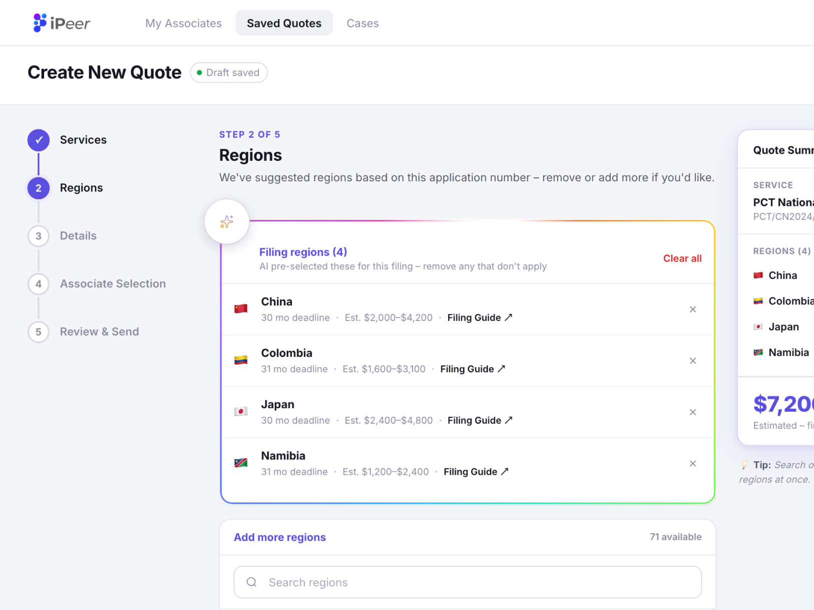
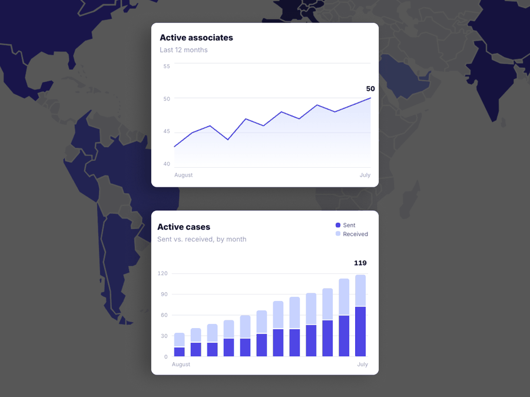
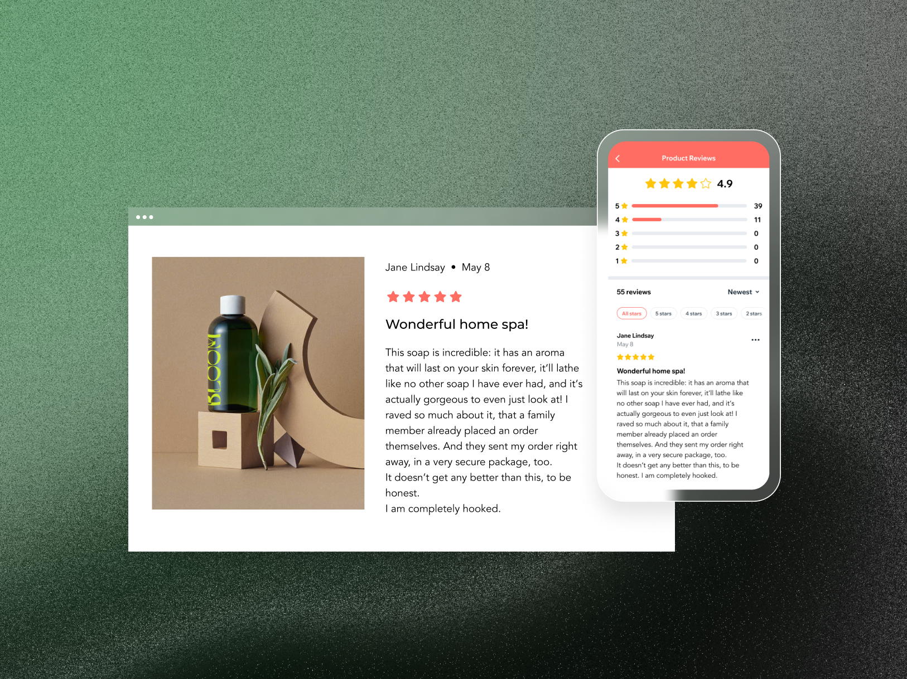
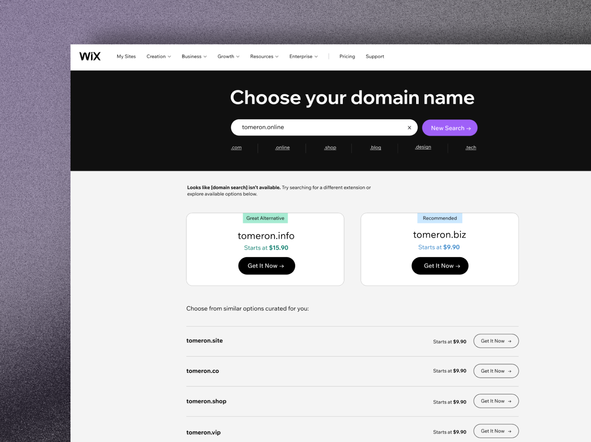

Self-taught designer. Curious by default.
Team player by choice.
I love cracking concepts open until
the solution users actually love shows up.

LET'S
MAKE
AMAZING
THINGS
TOGETHER!

From 40% drop-off to a quoting flow people actually finish.

A new dashboard, designed from scratch for a new user added to the system.

First-party reviews that replaced fragmented apps for millions of stores.

A redesign that made a big impact across every core KPI.